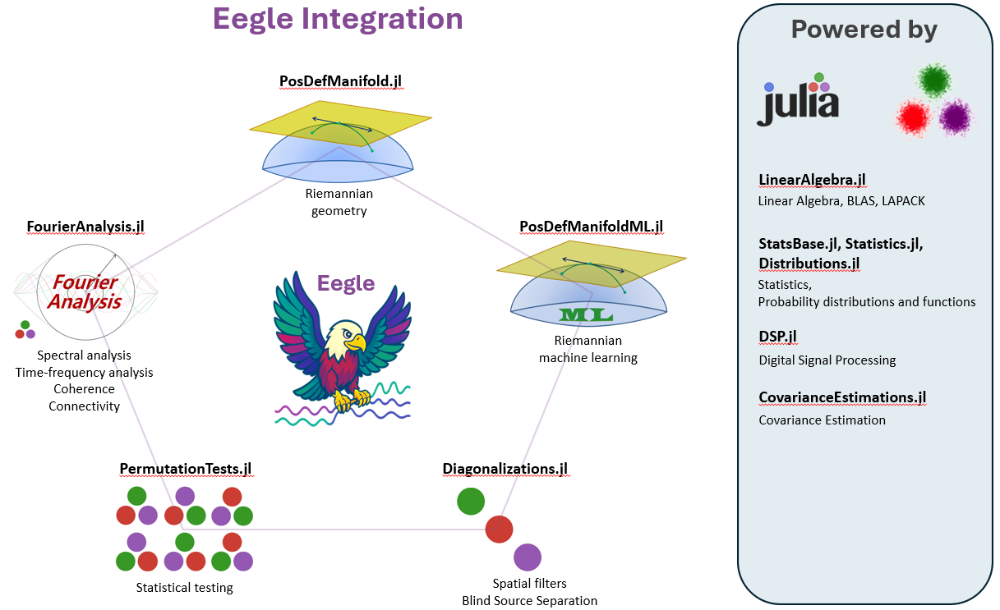

Eegle Documentation
The EEG General Library (Eegle) is a general-purpose package for preprocessing and processing human Electroencephalography (EEG) data.
It is the foundational building block that enables the integration of diverse state-of-the-art packages, leveraging the powerful Julia scientific eco-system.
It also provides some modules for advanced EEG analysis.
Eegle promotes standardization, conventions and a learning approach based on simple examples and advanced tutorials.

Requirements
Julia: version ≥ 1.10
Installation
Execute the following commands in Julia's REPL:
]add EegleTesting
Hit the backspace key (🡐) on your keyboard to get back the Julia prompt, then
using Pkg
Pkg.test("Eegle")Quick Start
Read the next page of this documentation for general informations, then work out the tutorials. When you need a function, check its documentation and the examples given therein.
About the Authors
Marco Congedo, corresponding author, is a Research Director of CNRS (Centre National de la Recherche Scientifique), working at UGA (University of Grenoble Alpes). Contact: first name dot last name at gmail dot com
Fahim Doumi at the time of writing was a research ingeneer at the Department of Enginnering of the University federico II of Naples.
TroubleShoothing
| Problem | Solution |
|---|---|
| No problem encountered so far | N.A. |
Reviewers & Contributors
Independent reviewers for both the code and the documentation are welcome. To contribute, please check the secion How to Contribute.
Contents
- Eegle Documentation
- Eegle
- FileSystem.jl
- Preprocessing.jl
- Processing.jl
- Miscellaneous.jl
- ERPs.jl
- CovarianceMatrix.jl
- Database.jl
- References
Index
Eegle.Database.infoDBEegle.InOut.EEGBase.mergeDSP.Filters.filtfiltDSP.Filters.resampleEegle.CovarianceMatrix.covmatEegle.CovarianceMatrix.encodeEegle.Database.infoNYdbEegle.Database.loadNYdbEegle.Database.selectDBEegle.Database.weightsDBEegle.ERPs.mark2stimEegle.ERPs.rejectEegle.ERPs.stim2markEegle.ERPs.trialsEegle.ERPs.trialsWeightsEegle.FileSystem.changeFileExtEegle.FileSystem.fileBaseEegle.FileSystem.fileExtEegle.FileSystem.getFilesInDirEegle.FileSystem.getFoldersInDirEegle.InOut.readASCIIEegle.InOut.readNYEegle.InOut.readSensorsEegle.InOut.readgTecEegle.InOut.writeASCIIEegle.Miscellaneous.isSquareEegle.Miscellaneous.minimaEegle.Miscellaneous.removeEegle.Preprocessing.embedLagsEegle.Preprocessing.removeChannelsEegle.Preprocessing.removeSamplesEegle.Processing.centeringMatrixEegle.Processing.epochingEegle.Processing.expVarEegle.Processing.globalFieldPowerEegle.Processing.globalFieldRMSStatistics.meanStatsBase.standardize